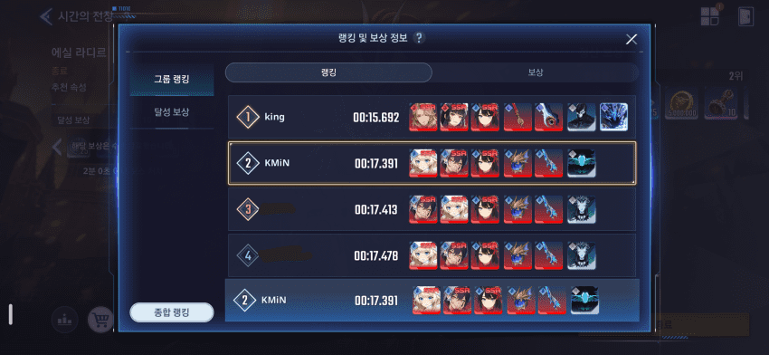
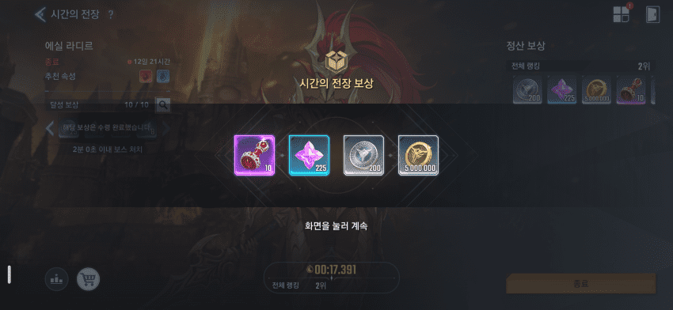
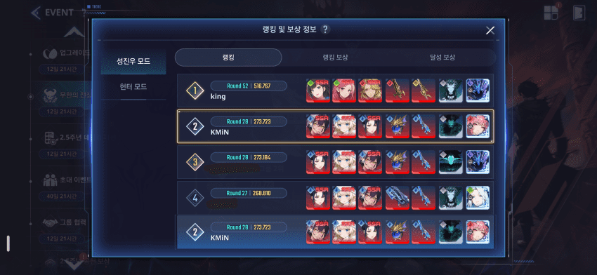
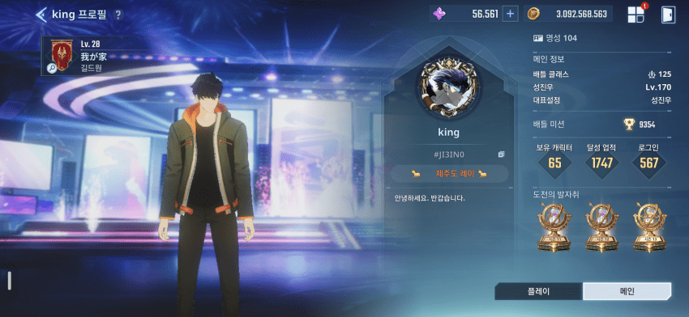
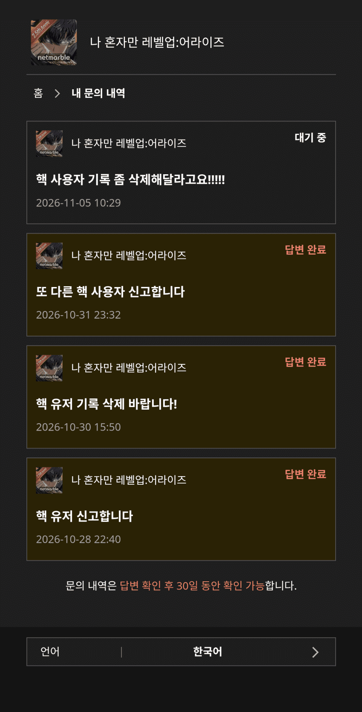
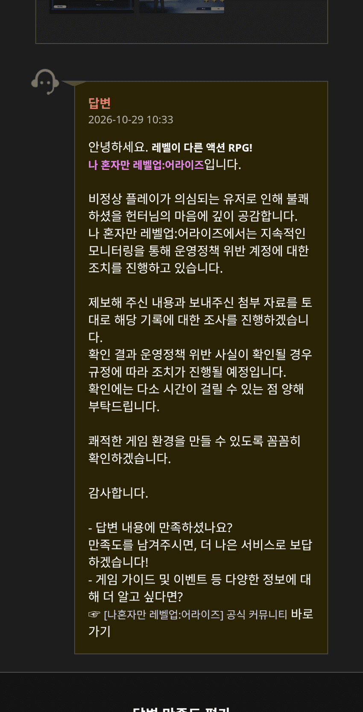
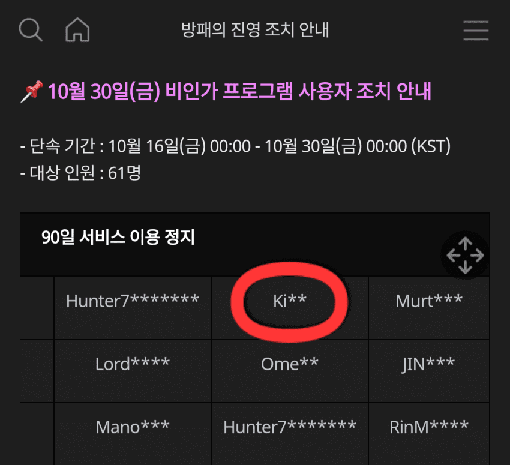

넷마블 해명해봐
분명히 내가 지난 10월28일 저녁 때 이 핵 사용자를 처음 신고했어
조사해서 조치 취한다는 답변도 다음날 오전에 바로 받았고
그리고 네들이 30일날 비인가 프로그램 사용자 조치 안내 공지 올렸고 그 리스트에 저 놈이 보이는데... 근데 기록은 그대로 남아 있어서 기록 삭제해달라고 그 날 또 신고했음...
근데 왜!!??? 아직도 이 핵쟁이가 활동하고 기록도 남아있냐?
어제도 이것 때문에 다시 신고했는데 이건 아직 확인도 안 함 ㅋㅋ
저놈 무한의 전장 기록도 정상으로 보이냐?? 어!!?? 이 스샷도 좀 전에 다시 찍은거야.. 아직도 저 기록이 무한의 전장에 버젓이 있어
무한의 전장에서 다른 핵쟁이 나왔을 때는 신고하니깐 바로 조치 취하더니 저놈은 왜 아직도 있는건데? 진짜 아는 사이냐?
심지어 내가 처음 신고했을 때 저놈 레벨이 166이었는데 지금 방금 다시 확인해보니 170에다가 접속일도 558에서 567로 +9일이 늘어났어... 즉, 이놈 서비스 정지 안 먹은거고 너희 일 제대로 안 하고 있다는 증거야
표면적으로는 몇명만 조치 취한척 하고 실제로는 그냥 핵대리 방치하고 있던거 아냐? 이거 심각한 문제야
네들이 이런 대리 플레이/핵쟁이 제대로 강력하게 조치 안 하기 때문에 정정당당하게 플레이하는 유저들이 불쾌감과 스트레스 받으면서 게임해야하고 순위도 밀려서 보상 받아야 되는게 맞다고 보냐??
너희 이런 핵쟁이 잡는다고 바로 보상 안 주고 하루나 몇일 조사하고 짜를 거 짜르고 제대로 순위 반영해서 보상준다고 했으면 약속 지켜야지.
시간의 전장 24시간 정산 시간 동안 뭐함? 결론: 일 안 함
말도 안 되는 조각상을 내놓고 더 말도 안 되는 뻥투력으로 2.5년 동안 플레이한걸 하루아침에 다 헛수고 했다고 느끼게 만들고 이제는 핵도 그냥 냅둔다?
이러니 유저들이 지쳐서 이 게임 접지 ㅅㅂ
이 핵쟁이 사건 어떻게 책임질거냐???
나를 포함해서 피해 받은 우리 서버 유저들 어떻게 책임질거야???
댓글
댓글 보관 대기 중입니다. 원문 응답 오류가 있으면 다음 실행에서 다시 수집합니다.